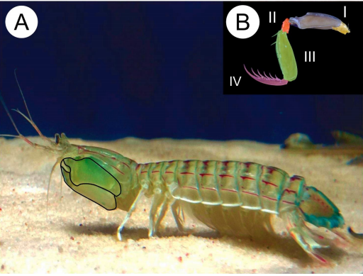

Fatos sobre o Stomatopoda
Dados
NOME: Stomatopoda
NOME CIENTÍFICO: Odontodactylus scyllarus
REINO: Animalia
FILO: Arthropoda
SUBFILO: Crustacea
CLASSE: Malacostraca
SUBCLASSE: Hoplocarida
ORDEM: Stomatopoda
Camarão Louva Deus do mar
Este crustáceo recebe o nome popular porque é um predador voraz assim como o louva-a-deus. O camarão louva-a-deus é encontrado na costa do Mar Mediterrâneo. Seu habitat são os substratos arenosos e lodosos em profundidades de 100 a 200 metros.

Olho mágico
A maioria das pessoas tem três tipos de células de detecção de luz, ou fotorreceptores, que são sensíveis à luz vermelha, verde e azul. Mas o camarão louva-a-deus tem de 12 a 16 fotorreceptores diferentes em sua banda média.

One punch-shrimp
Os camarões louva-a-deus são parentes agressivos de caranguejos e lagostas e atacam outros animais, mutilando-os com espetadas devastadoras. Suas armas secretas são um par de braços articulados dobrados sob a cabeça, que podem ser desenrolados em velocidades incríveis de 80km/h.
As espécies 'spearer' têm braços terminando em uma espiga farpada diabólica que eles usam para empalar presas de corpo mole como peixes. Mas as espécies maiores de 'destruidores' têm braços que terminam em clavas pesadas e os usam para desferir golpes com a mesma força de uma bala de rifle.
Sites de Referências
- https://www.nationalgeographic.com/science/phenomena/2014/07/03/natures-most-amazing-eyes-just-got-a-bit-weirder/
- https://repositorio.unesp.br/bitstream/handle/11449/192211/amaral_als_me_bot.pdf?sequence=7&isAllowed=y
- https://manualdomundo.uol.com.br/blog/camarao-louva-deus-um-animal-marinho-que-mais-parece-saido-de-uma-serie-de-ficcao/
- http://zoologicovirtualdokoba.blogspot.com/2015/03/camarao-louva-deus.html#:~:text=Este%20crust%C3%A1ceo%20recebe%20o%20nome,de%20100%20a%20200%20metros.